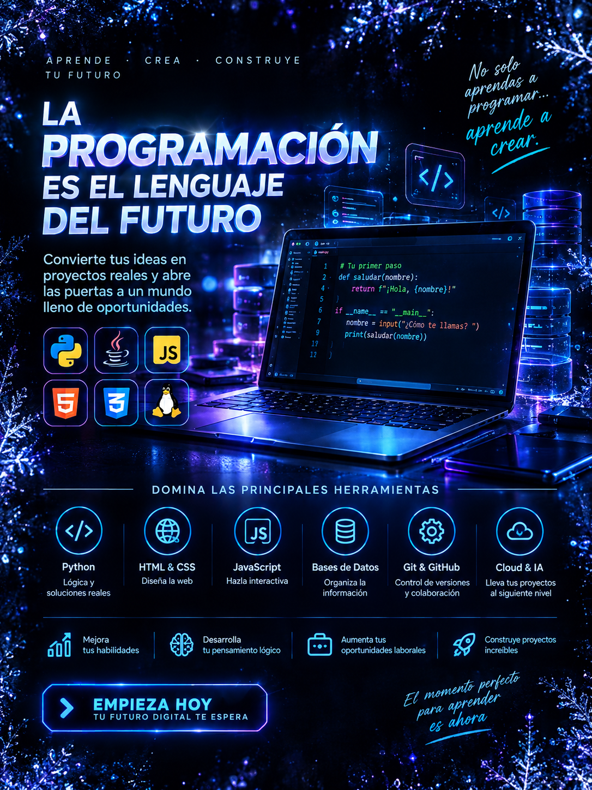
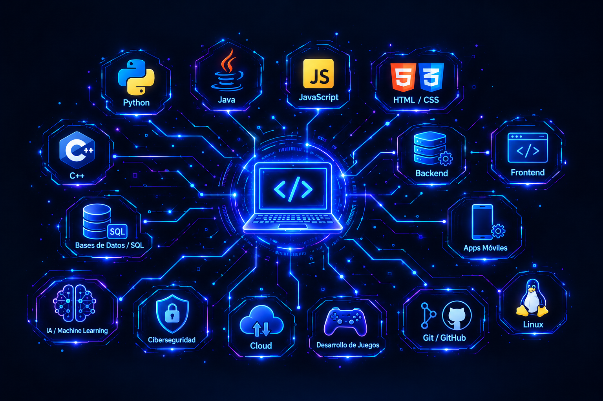

Estudiante de Ingeniería de Software con especialización en Inteligencia Artificial, apasionado por la tecnología, la programación y el desarrollo de soluciones digitales. Actualmente me encuentro fortaleciendo mis conocimientos en HTML, Python y otras herramientas tecnológicas, mientras continúo explorando nuevas áreas relacionadas con el desarrollo de aplicaciones y la inteligencia artificial. Me caracterizo por ser una persona responsable, comprometida, proactiva y con una gran disposición para aprender. Disfruto enfrentar nuevos retos, analizar problemas y buscar soluciones eficientes mediante la tecnología. Asimismo, tengo interés en seguir desarrollando mis habilidades en programación, desarrollo web, bases de datos, automatización e inteligencia artificial. Mi objetivo es continuar creciendo tanto a nivel académico como profesional, adquiriendo experiencia práctica y participando en proyectos que me permitan aplicar mis conocimientos, trabajar en equipo y aportar ideas innovadoras. Considero que el aprendizaje constante, la disciplina y la adaptación a nuevas tecnologías son fundamentales para desarrollarme en el ámbito de la ingeniería de software.
NOMBRES: JOSHUE VARU JHONATAN
APELLIDOS: RAFAEL ATENCIA
EDAD: 18 AÑOS
TELEFONO: 922049114
CORREO: 1777148@gmail.com
DNI: 71363152
Actualmente curso la carrera de Ingeniería de Software con Inteligencia Artificial en el instituto SENATI, donde me encuentro en el segundo ciclo de mi formación profesional. Durante mis estudios estoy desarrollando y fortaleciendo conocimientos relacionados con la programación, desarrollo de software y tecnologías orientadas a la inteligencia artificial. Mi formación me permite adquirir bases sólidas para el diseño y desarrollo de aplicaciones, resolución de problemas mediante la programación y uso de diferentes herramientas tecnológicas. Además, tengo interés en seguir ampliando mis conocimientos y adquirir experiencia práctica a través de proyectos que me permitan aplicar lo aprendido y prepararme para futuros desafíos en el ámbito tecnológico.
Indica cuántos colegios estudiaste y escribe sus nombres. Los campos se crearán automáticamente.
ALTA COSTURA
DESEMPEÑO EN MAQUINAS
Programación en Python
Desarrollo web con HTML
Trabajo en equipo
| Habilidad | Nivel |
|---|---|
| Programación en Python | BASICO |
| Desarrollo web con HTML | BASICO |
| EMPRESA TECNOLOGICA | CIUDAD | LOGO DE LA EMPRESA |
|---|---|---|
|
|
|
|
|
|
|
|
|
|
|
|
|
|
|
Me gusta la programación porque me permite crear, experimentar y desarrollar nuevas ideas mediante la tecnología. Desde que comencé a aprender sobre programación, he descubierto que es un área que requiere mucha práctica, paciencia y creatividad, pero que también ofrece muchas oportunidades para aprender y mejorar constantemente. Durante mi aprendizaje he adquirido conocimientos básicos en Python, HTML y CSS. Con Python he aprendido los fundamentos de la programación y la lógica, mientras que con HTML y CSS he aprendido a crear y diseñar páginas web. Estos conocimientos me han permitido comprender mejor cómo funcionan diferentes herramientas y tecnologías relacionadas con el desarrollo de software. Quiero seguir aprendiendo y fortaleciendo mis conocimientos para poder realizar proyectos cada vez más completos. También tengo interés en aprender JavaScript, bases de datos, desarrollo de aplicaciones, inteligencia artificial y otras tecnologías que puedan ayudarme a mejorar como programador. Uno de mis objetivos es seguir practicando mediante proyectos personales y trabajos académicos que me permitan aplicar lo que voy aprendiendo. También quiero adquirir experiencia, conocer nuevas herramientas y aprender de los errores que pueda encontrar durante el proceso. Considero que la programación es una habilidad que se desarrolla con la práctica y el aprendizaje constante. Por eso, quiero continuar preparándome, afrontar nuevos retos y ampliar mis conocimientos para poder crecer tanto en el ámbito académico como profesional y, en el futuro, desempeñarme en el área de desarrollo de software. .

